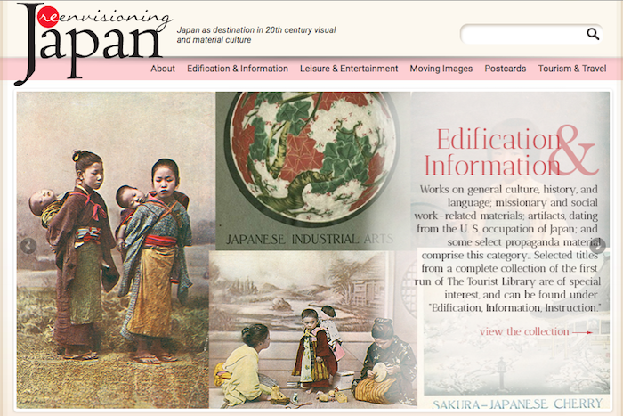
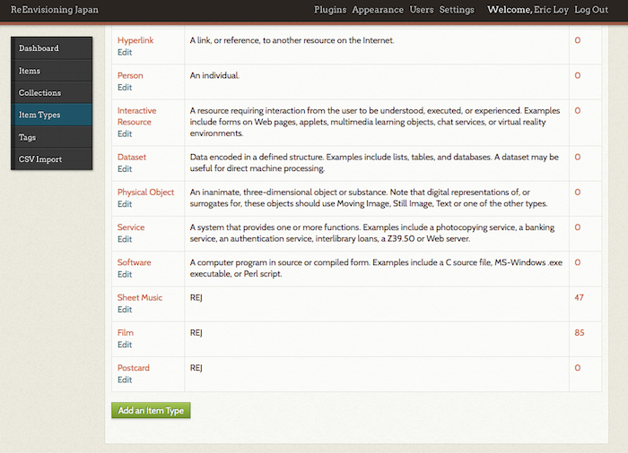

<section id="bio">
<div class="container">
    <h3>Metadata Schemas and Cultural Heritage Projects</h3>
    <div class="panel panel-default">
    <div class="panel-body">
        
        <p></p>
        
        <br/>
        
        <p>In AY 2015-16, I served as a research assistant for <a href="http://www.sas.rochester.edu/mlc/people/faculty/bernardi_joanne/index.html" target="_blank">Joanne Bernardi</a>'s digital cultural heritage project <a href="http://humanities.lib.rochester.edu/rej/" target="_blank">ReEnvisioning Japan: Japan as destination in 20th century visual and material culture</a>. Currently, the project is transitioning platforms from WordPress to Omeka while at the same updating its metadata schema to better accommodate more diverse objects as well as take advantage of Omeka's functionality. In other words--a pretty comprehensive redesign.</p>
        
        <p>In addition to working on design ideas for the new site, I made my most direct contribution to the project through the creation of revised metadata schemas for different classes of the thousands of objects in the collection, like postcards, films, sheet music, etc. For all objects, we started with any available <a href="http://dublincore.org" target="_blank">Dublin Core</a> types and then revised or expanded the metadata fields to suit the project's goals.</p>
        
        <p>The transition to Omeka continues, but it is planned to be finished AY 2016-17.</p>
        
        <hr/>
        
        <p></p>
        
        <br/>
        
        <p></p>
        
    </div>    
    </div>    
</div>    
</section>

